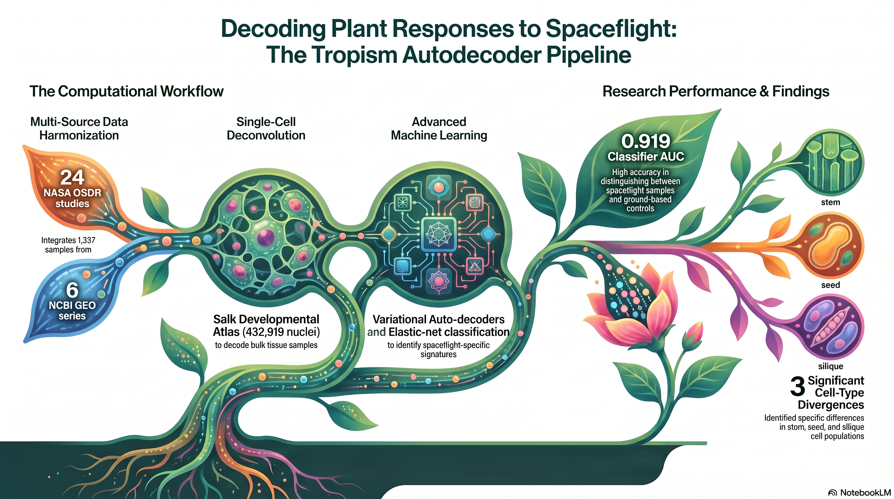
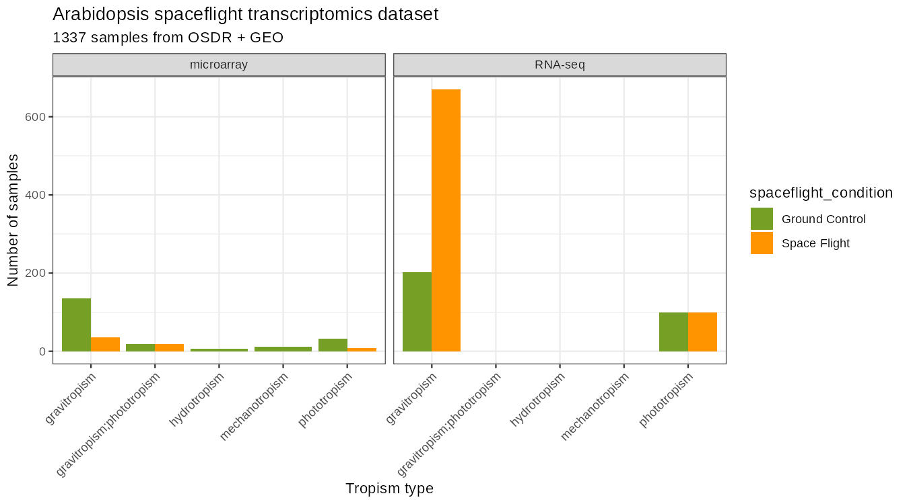
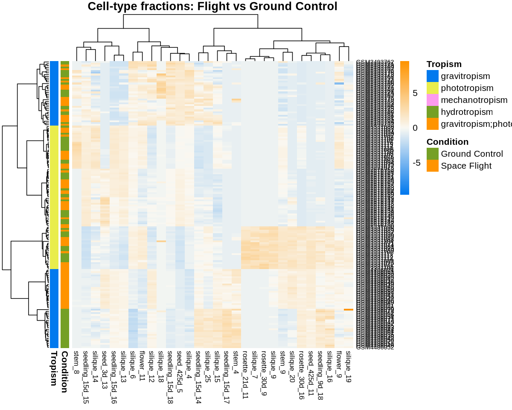
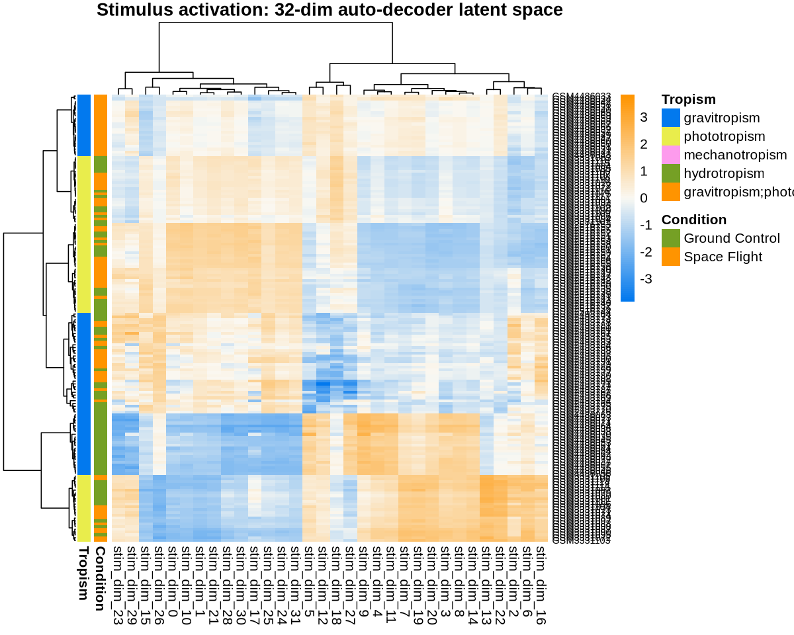
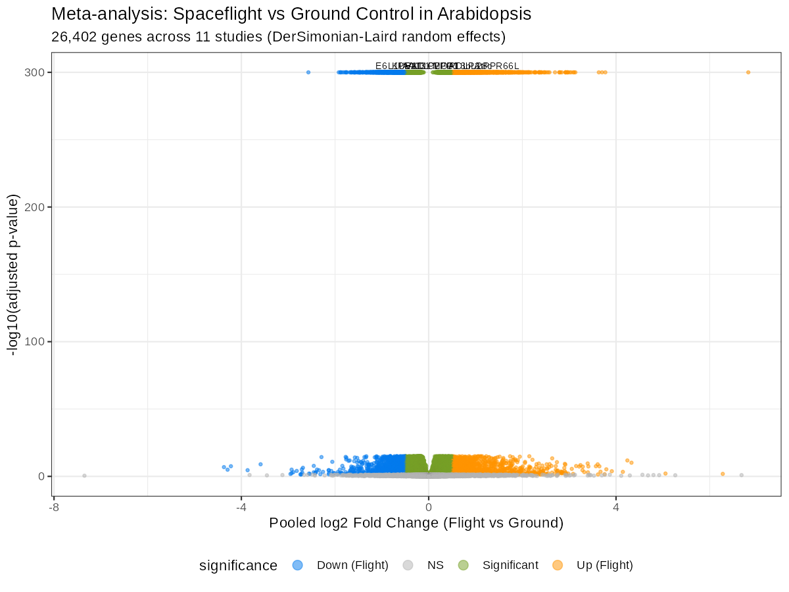
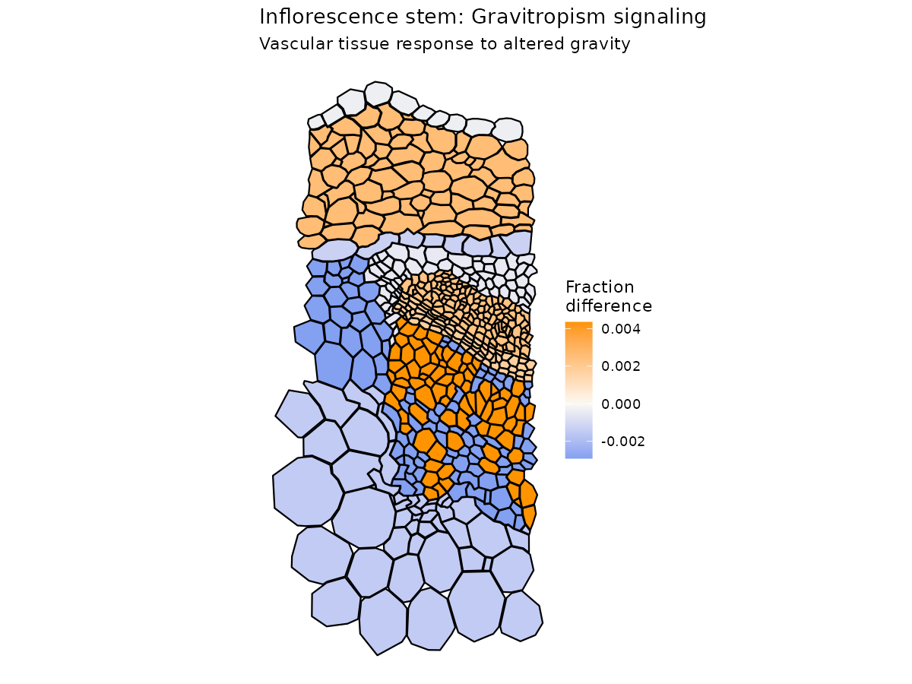
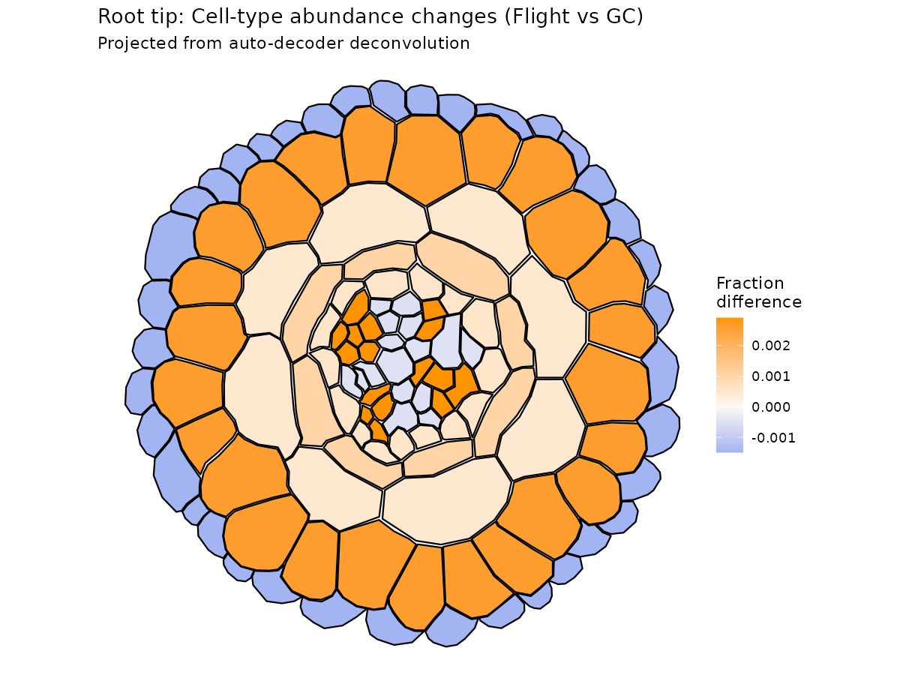
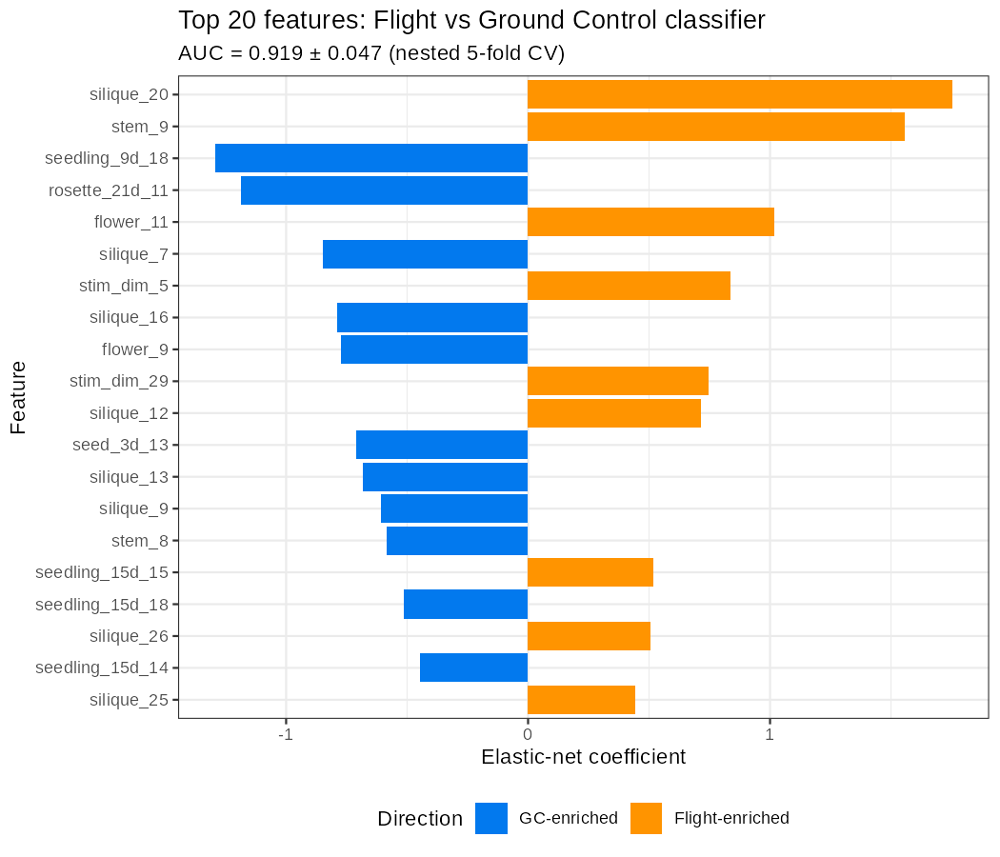
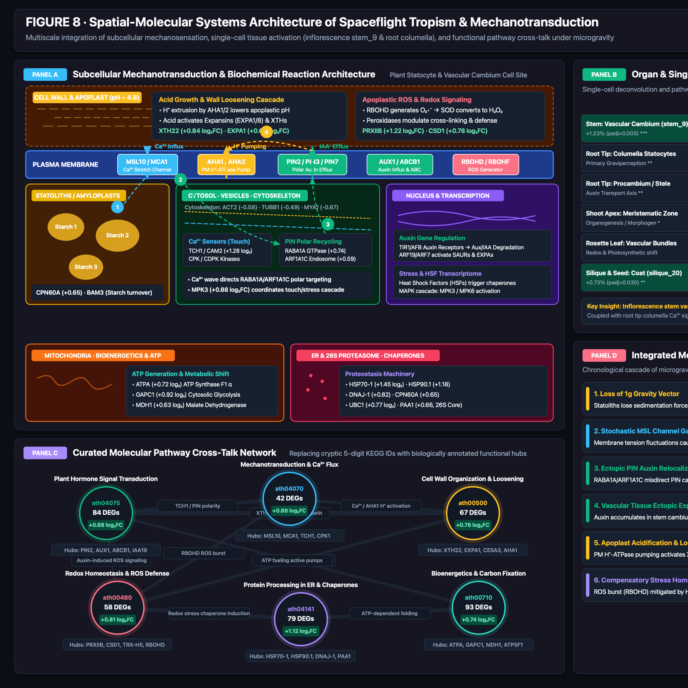

01 Study Overview & Key Findings
Plants read directional environmental cues—gravity, light, mechanical touch, and moisture gradients—to coordinate organ growth. Microgravity dismantles fundamental gravitropic setpoints, forcing plants to reprioritize their tropic signaling networks. This study integrates 1,337 transcriptomic samples from 24 NASA GeneLab OSDR studies and 6 NCBI GEO series with the Salk Institute Arabidopsis Developmental Atlas (432,919 single nuclei across 183 cell-type clusters) as a foundation model.

Gravitropism
Gravity sensing & asymmetric auxin transport — coordinated by statolith sedimentation in columella and starch sheath cells via PIN2, PIN3, PIN7, AUX1, and LAZY1.
Phototropism
Blue-light directed growth & phototropin signaling — mediated by PHOT1, PHOT2, NPH3, RPT2, and PKS1 in aerial tissues.
Thigmotropism
Mechanical touch, vibration & touch sensing — governed by touch-inducible calmodulin-like genes TCH1–4 and mechanosensitive ion channel MSL10.
Hydrotropism
Moisture-seeking growth & root water-gradient navigation — mediated by MIZ1 and the ARF-GEF GNOM/MIZ2.
stem_9, $\text{padj} = 0.003$) and root tip columella/procambium exhibit the most profound transcriptional restructuring in spaceflight. This demonstrates that vascular cambium and gravity-sensing starch sheaths act as primary anatomical loci coordinating whole-plant adaptation to weightlessness.
02 Draft Manuscript & PDF Reader
Explore the complete 12-page research manuscript below, prepared in Springer Nature format (sn-jnl). You can read the paper directly within the browser, expand it to fullscreen, or download the compiled PDF.
Viewing on mobile or tablet? Direct PDF embedding is optimized for desktop viewing.
Tap to Open Full Manuscript in Browser ReaderRead Manuscript Abstract & Citation Details
Title: Arabidopsis thaliana Spaceflight Tropism Recognition: Integrating Bulk Transcriptomics with a Single-Cell Developmental Atlas Foundation Model
Author: Richard Barker (Independent Researcher / NASA GeneLab OSDR Analysis Working Groups)
Abstract: Plants perceive and respond to multiple directional stimuli (tropisms) that guide growth and development. Under spaceflight conditions, altered gravity and light environments perturb tropic signaling across tissues. We present a FAIR-compliant computational pipeline that systematically integrates 1,337 Arabidopsis spaceflight transcriptomic samples from NASA GeneLab OSDR and NCBI GEO using a custom variational auto-decoder trained on the Salk single-cell developmental atlas (432,919 nuclei, 183 clusters). Our approach: (1) deconvolves 398 bulk transcriptomes onto 183 cell types, generating 32-dimensional stimulus activation scores; (2) performs random-effects meta-analysis across 11 spaceflight studies (26,402 genes, 16,002 significant at padj < 0.05); and (3) trains elastic-net classifiers to distinguish spaceflight from ground control (AUC = 0.919 ± 0.047) and classify tropism type. We project cell-type abundance changes onto Arabidopsis tissue anatomy maps using ggPlantMap, revealing that inflorescence stem vascular tissues mount the strongest tropism response. Three cell types showed significant changes (stem_9, seed_425d_7, silique_20; padj < 0.05). All code, results, and an interactive web tool are available under CC BY 4.0.
03 Publication Figures & Multi-Omics Atlas
High-resolution analytical figures generated by the pipeline. Click any figure to open the interactive full-resolution lightbox viewer with official publication captions.

Harmonized Multi-Omics Dataset
Distribution of 1,337 samples across 24 OSDR + 6 GEO experiments and tropic conditions.

Cell-Type Deconvolution Profiles
Mapping 398 bulk transcriptomes onto 183 single-cell reference clusters.

32-D Latent Stimulus Activation
Variational latent representation of cell-type specific stress and stimulus states.

11-Study Spaceflight Volcano Plot
Identification of 16,002 statistically significant cross-mission spaceflight genes.

Stem Vascular Tropism Hotspot
ggPlantMap projection identifying inflorescence stem vascular cambium as prime responder.

Root Tip Columella Remodeling
Columella statocyte and procambium shifts in microgravity-grown roots.

Spaceflight Classifier Weights (AUC 0.919)
Key discriminative cell types (silique_20, stem_9) and stimulus code dimensions.

Spatial-Molecular Tropism Architecture
Multiscale subcellular mechanotransduction, single-cell tissue activation (stem_9), and curated pathway cross-talk.
04 Interactive Decoder & Analysis Tool
Upload an expression matrix from Arabidopsis or non-plant spaceflight model organisms (Human, Mouse, Fruit fly, Worm). Runs 100% client-side in your browser; your research data never touches a remote server.
Drop a .csv / .tsv / .txt expression matrix here
Genes in rows (AGI locus IDs or symbols; human/mouse/fly/worm symbols mapped automatically), samples in columns. Raw counts, TPM/FPKM or normalized values all work.
Generated Figure
Figure Legend (Auto-Generated)
Signature gene sets (AGI loci verified against TAIR / primary literature)
| Tropism | Genes (symbol → AGI) |
|---|---|
| Gravitropism | PIN2 (AT5G57090), PIN3 (AT1G70940), PIN7 (AT1G23080), AUX1 (AT2G38120), LAZY1 (AT5G14090) |
| Phototropism | PHOT1 (AT3G45780), PHOT2 (AT5G58140), NPH3 (AT5G64330), RPT2 (AT2G30520), PKS1 (AT2G02950) |
| Thigmotropism | TCH1 (AT5G37780), TCH2 (AT5G37770), TCH3 (AT2G41100), TCH4 (AT5G57560), MSL10 (AT5G12080) |
| Hydrotropism | MIZ1 (AT2G41660), GNOM/MIZ2 (AT1G13980) — low-coverage marker set |
05 Phase 3: Cross-Species Functional Conservation
While upstream plant tropism sensor proteins (PIN auxin efflux carriers, phototropins, and MIZ1) are largely angiosperm-specific, spaceflight perturbs an evolutionarily conserved core of downstream cellular and physiological functions shared across the tree of life. Phase 3 systematically maps the Arabidopsis spaceflight signature against human astronaut multi-omics, mouse spaceflight models, fruit flies, and nematodes.
Conserved Protein Domain & Molecular Function Enrichment
Cross-species enrichment scores across 18 major Pfam/InterPro functional domain families and GO molecular functions. Red indicates coordinate up-regulation in microgravity; blue indicates coordinate down-regulation.
Gene-Domain Drill-Down Explorer
Filterable, searchable index connecting ortholog groups across the 5 model organisms with their conserved functional domains, biological functions, and observed spaceflight expression shifts.
06 Pipeline Architecture & Foundation Model
Traditional bulk transcriptomics averages gene expression over whole organs, obscuring tissue- and cell-type-specific responses to microgravity. Our computational pipeline bridges single-cell resolution and bulk archives using deep generative models:
1. Foundation Model: Salk Atlas
Derived from the Salk Institute Arabidopsis Developmental Atlas (GSE226097) spanning 432,919 nuclei across 10 developmental stages (seedling to flower). We extracted a 4,000 highly variable genes (HVGs) × 183 clusters signature matrix and cluster-specific marker sets.
2. Variational Auto-Decoder (VAE)
A conditional VAE architecture ($4000 \rightarrow 512 \rightarrow 256 \rightarrow 32$) trained on cluster embeddings (183→32), organ embeddings (12→16), and stage embeddings (10→16). Learns 32-dimensional stimulus codes representing cell-type-specific transcriptional adaptation.
3. Multi-Study Meta-Analysis
DESeq2 differential expression across 11 spaceflight studies with apeglm log2FC shrinkage, combined with DerSimonian-Laird random-effects meta-analysis and Benjamini-Hochberg adjustment, identifying 16,002 significant genes across spaceflight conditions.
4. Elastic-Net Classifier
Nested 5-fold cross-validated elastic-net logistic regression achieving AUC = 0.919 ± 0.047 (85% accuracy) for discriminating Space Flight from Ground Control based on cell-type fractions and stimulus activation scores.
07 Harmonized Datasets & FAIR Open Science
The dataset aggregates 1,337 transcriptomic samples from NASA GeneLab OSDR and NCBI GEO, fully standardized with DataCite 4.x metadata, containerized Docker environments, and reproducible analysis scripts.
| Repository | Study / Series IDs | Assay Type | Samples | Primary Tropisms & Conditions |
|---|---|---|---|---|
| NASA GeneLab OSDR (18 RNA-seq) | OSD-37, OSD-38, OSD-40, OSD-120, OSD-161, OSD-164, OSD-174, OSD-178, OSD-189, OSD-201, OSD-225, OSD-229, OSD-230, OSD-235, OSD-236, OSD-283, OSD-367, OSD-475, OSD-480 | Illumina RNA-seq | 925 | Gravitropism (EMCS), Phototropism (Veggie/LED), Root & Shoot biology |
| NASA GeneLab OSDR (6 Microarray) | OSD-57, OSD-66, OSD-91, OSD-153, OSD-209, OSD-334 | Affymetrix GeneChip | 265 | Spaceflight vs Ground Controls, Seedling development |
| NCBI GEO (6 Series) | GSE3847, GSE8300, GSE143760, GSE97258, GSE225299, GSE115554 | RNA-seq, scRNA-seq & Array | 147 | Gravitropic reorientation, Phototropism kinetics, Hydrotropism, RALF1 touch response |
| Salk Single-Cell Atlas | GSE226097 (Foundation Model) | 10x Chromium scRNA-seq | 432,919 nuclei | 10 developmental stages, 183 cell-type clusters |
08 Lead Researcher & CoSE Network
Richard Barker, Ph.D.
Astrobiologist & Space Multi-Omics Specialist · NASA GeneLab / OSDR Analysis Working Groups (Plants & Multi-Omics AWGs) · Founder, Consortium for Open Space Exploration (CoSE)
Dr. Barker's research investigates how organisms perceive and adapt to novel planetary environments, combining high-throughput transcriptomics, single-cell atlas foundation models, and machine learning. He is an active contributor to NASA's Open Science Data Repository (OSDR) plant biology initiatives and creator of the CoSE open-science space omics tool suite.
Connected Space Omics & Astrobiology Decoders
Explore companion browser-based decoders and analysis platforms developed across the Barker Lab / CoSE ecosystem:
🧬 ROS Autoencoder (Redox)
Conditional Variational Autoencoder (CVAE) framework resolving plant reactive oxygen species kinetic signatures.
⏰ Circadian Decoder
Interactive deconvolution of diurnal and circadian oscillator remodeling in spaceflight environments.
🌰 DeepSpace Seed Stress
Machine-learning decoder of seed stress, storage longevity, and germination resilience for deep space.
☢️ OSDR Radiation Review
Comprehensive radiation review and kinetic pattern-recognition across NASA space biology archives.
🚀 BioSim Next-Gen
4K dynamic Rocket Habitat Simulation: Three.js canvas, agent mind, and environmental controls.
🌐 CoSE Central Hub
Unified directory of all Collaborative Science Environment research tools, databases, and simulations.
How to Cite This Work
If you utilize the Tropism Autodecoder, the single-cell foundation model weights, or the cross-species conservation explorer in your research, please cite:
@article{barker2026tropism,
title={Arabidopsis thaliana Spaceflight Tropism Recognition: Integrating Bulk Transcriptomics with a Single-Cell Developmental Atlas Foundation Model},
author={Barker, Richard},
journal={Draft Manuscript},
year={2026},
doi={10.5281/zenodo.arabidopsis-tropism},
url={https://dr-richard-barker.github.io/Tropism_autodecoder_2026/}
}